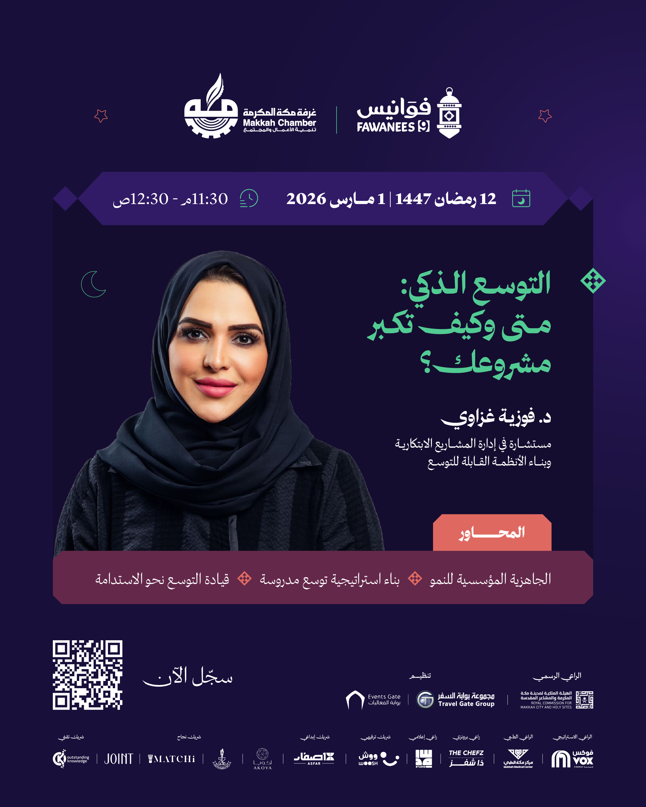
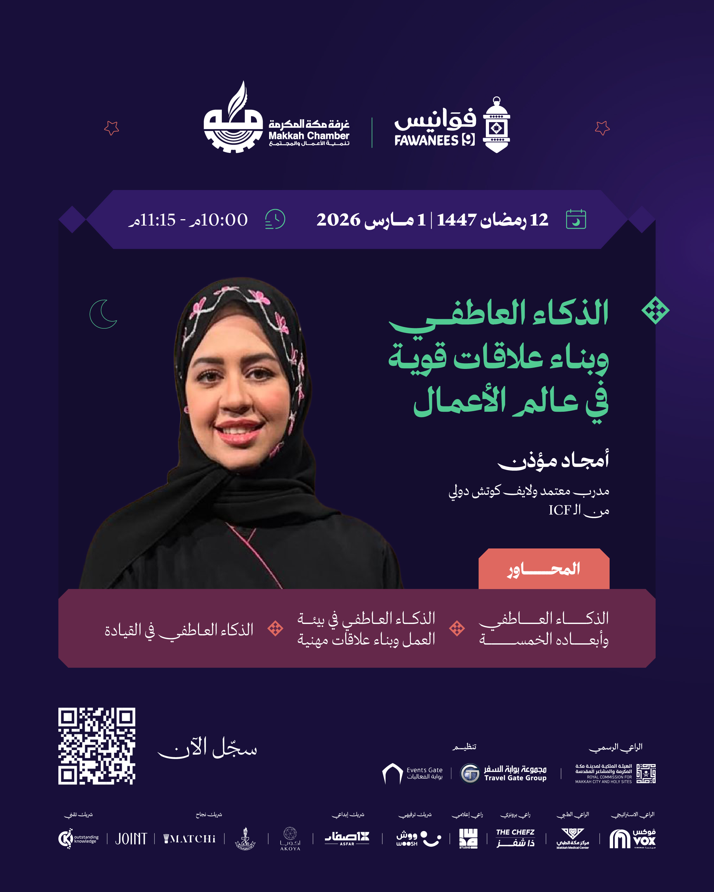
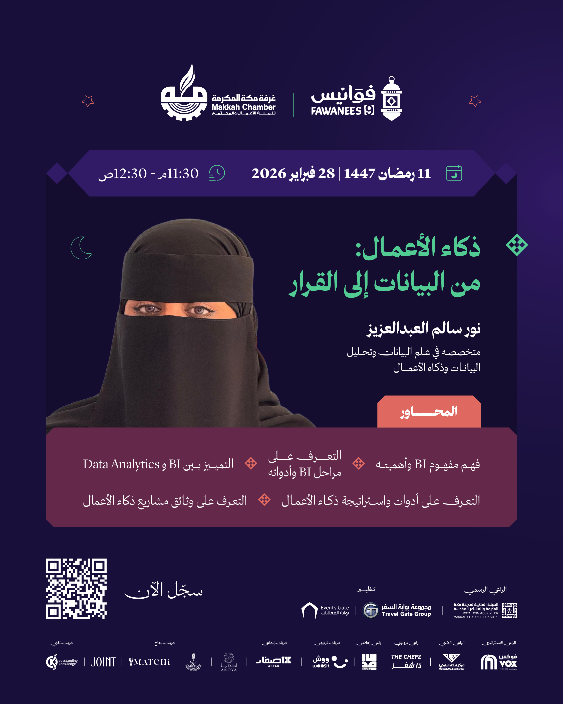
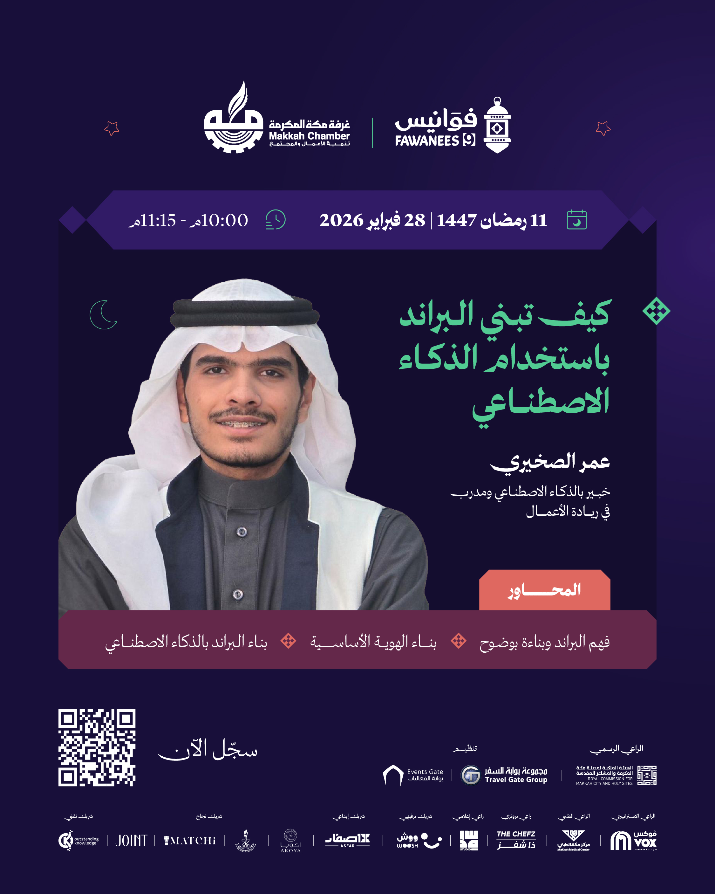
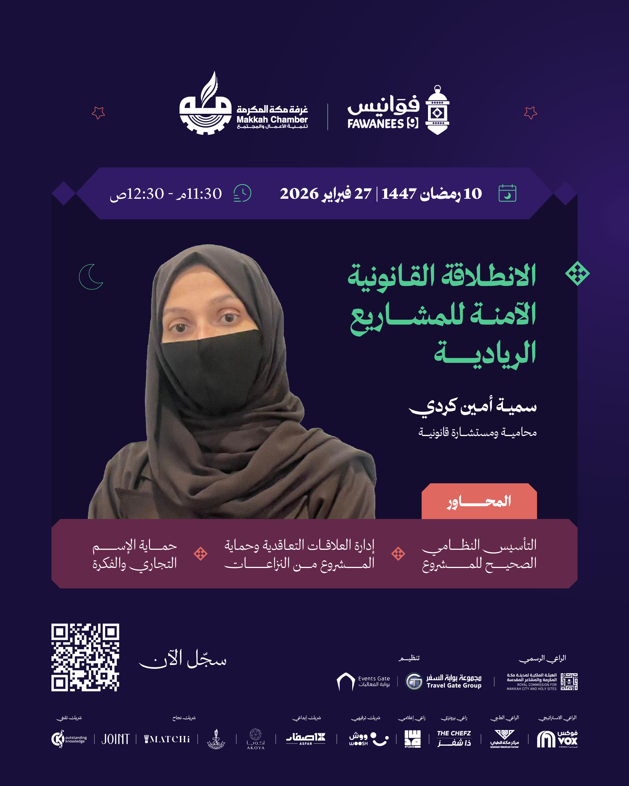
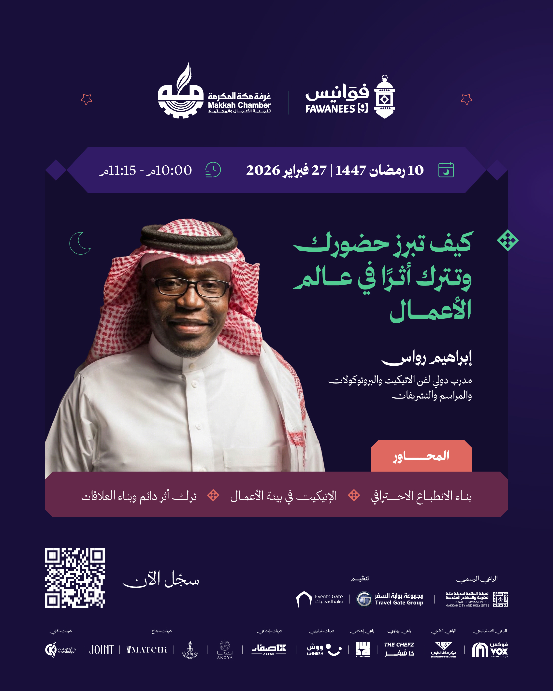

تابع فعاليات مكة
هذه الروابط تتحدث مع كل بناء وتعرض الفعاليات القادمة والجارية لهذا السياق فقط.
فعاليات مكة القادمة والجارية والمنتهية كما تظهر في EventLive مع مصدر ووقت واضح.
هذه الروابط تتحدث مع كل بناء وتعرض الفعاليات القادمة والجارية لهذا السياق فقط.
"* الجاهزية المؤسسية للنمو * بناء استراتيجية توسع مدروسة * قيادة التوسع نحو الاستدامة" التوسع الذكي: متى وكيف تكبر مشروعك؟ ضمن فعاليات الغرف التجارية في مكة. تبدأ الفعالية ٠١/٠٣/٢٠٢٦، ١١:٠٣ م وتنتهي ٠٢/٠٣/٢٠٢٦، ١٢:٠٣ ص حسب البيانات المتاحة. تعرض الصفحة وقت الفعالية وموقعها ومصدرها وروابط التقويم والاتجاهات عند توفرها. المصدر: Makkah Chamber Events.

"* الجاهزية المؤسسية للنمو * بناء استراتيجية توسع مدروسة * قيادة التوسع نحو الاستدامة" التوسع الذكي: متى وكيف تكبر مشروعك؟ ضمن فعاليات الغرف التجارية في مكة. تبدأ الفعالية ٠١/٠٣/٢٠٢٦، ١١:٠٣ م وتنتهي ٠٢/٠٣/٢٠٢٦، ١٢:٠٣ ص حسب البيانات المتاحة. تعرض الصفحة وقت الفعالية وموقعها ومصدرها وروابط التقويم والاتجاهات عند توفرها. المصدر: Makkah Chamber Events.
تفاصيل الحضور
"* الذكاء العاطفي وابعاده الخمسة * الذكاء العاطفي في بيئة العمل وبناء علاقات مهنية قوية * الذكاء العاطفي في القيادة" الذكاء العاطفي وبناء علاقات قوية في عالم الأعمال ضمن فعاليات الغرف التجارية في مكة. تبدأ الفعالية ٠١/٠٣/٢٠٢٦، ١٠:٠٣ م وتنتهي ٠١/٠٣/٢٠٢٦، ١١:٠٣ م حسب البيانات المتاحة. تعرض الصفحة وقت الفعالية وموقعها ومصدرها وروابط التقويم والاتجاهات عند توفرها. المصدر: Makkah Chamber Events.
تفاصيل الحضور
"* فهم مفهوم BI وأهميته * التعرف على مراحل BI وأدواته * التمييز بين BI و Data Analytics * التعرف على ادوات واستراتيجة ذكاء الاعمال * التعرف على وثائق مشاريع ذكاء الاعمال "
تفاصيل الحضور
"* فهم البراند وبناءة بوضوح * بناء الهوية الاساسية * بناء البراند بالذكاء الإصطناعي" كيف تبني البراند باستخدام الذكاء الاصطناعي ضمن فعاليات الغرف التجارية في مكة. تبدأ الفعالية ٢٨/٠٢/٢٠٢٦، ١٠:٠٢ م وتنتهي ٢٨/٠٢/٢٠٢٦، ١١:٠٢ م حسب البيانات المتاحة. تعرض الصفحة وقت الفعالية وموقعها ومصدرها وروابط التقويم والاتجاهات عند توفرها. المصدر: Makkah Chamber Events.
تفاصيل الحضور
* التأسيس النظامي الصحيح للمشروع * إدارة العلاقات التعاقدية وحماية المشروع من النزاعات * حماية الاسم التجاري والفكرة الانطلاقة القانونية الآمنة للمشاريع الريادية ضمن فعاليات الغرف التجارية في مكة. تبدأ الفعالية ٢٧/٠٢/٢٠٢٦، ١١:٠٢ م وتنتهي ٢٨/٠٢/٢٠٢٦، ١٢:٠٢ ص حسب البيانات المتاحة. تعرض الصفحة وقت الفعالية وموقعها ومصدرها وروابط التقويم والاتجاهات عند توفرها. المصدر: Makkah Chamber Events.
تفاصيل الحضور
"* بناء الانطباع الاحترافي * الإتيكيت في بيئة الأعمال * ترك أثر دائم وبناء العلاقات" كيف تبرز حضورك وتترك أثرًا في عالم الأعمال ضمن فعاليات الغرف التجارية في مكة. تبدأ الفعالية ٢٧/٠٢/٢٠٢٦، ١٠:٠٢ م وتنتهي ٢٧/٠٢/٢٠٢٦، ١١:٠٢ م حسب البيانات المتاحة. تعرض الصفحة وقت الفعالية وموقعها ومصدرها وروابط التقويم والاتجاهات عند توفرها. المصدر: Makkah Chamber Events.
تفاصيل الحضورالتخطيط الاستراتيجي والتشغيلي المؤسسي التخطيط الاستراتيجي والتشغيلي المؤسسي ضمن فعاليات الغرف التجارية في مكة. تبدأ الفعالية ٠٩/٠٢/٢٠٢٦، ٥:٠٢ ص وتنتهي ٠٩/٠٢/٢٠٢٦، ٨:٠٢ ص حسب البيانات المتاحة. تعرض الصفحة وقت الفعالية وموقعها ومصدرها وروابط التقويم والاتجاهات عند توفرها. المصدر: Makkah Chamber Events.
تفاصيل الحضور
فعالية رسمية من غرفة مكة. التاريخ المعلن: 27/01/2026 إلى 28/01/2026. دورة مقدمة في الأمن السيبراني ضمن فعاليات الغرف التجارية في مكة. تبدأ الفعالية ٢٧/٠١/٢٠٢٦، ٤:٠١ ص وتنتهي ٢٨/٠١/٢٠٢٦، ٨:٠١ م حسب البيانات المتاحة. تعرض الصفحة وقت الفعالية وموقعها ومصدرها وروابط التقويم والاتجاهات عند توفرها. المصدر: Makkah Chamber Events.
تفاصيل الحضور
كيف توظفين الذكاء الاصطناعي في مشروعك كيف توظفين الذكاء الاصطناعي في مشروعك ضمن فعاليات الغرف التجارية في مكة. تبدأ الفعالية ٢١/٠١/٢٠٢٦، ٦:٠١ م وتنتهي ٢١/٠١/٢٠٢٦، ٦:٠١ م حسب البيانات المتاحة. تعرض الصفحة وقت الفعالية وموقعها ومصدرها وروابط التقويم والاتجاهات عند توفرها. المصدر: Makkah Chamber Events.
تفاصيل الحضور
محاور الورشة/ ١- ما قبل المقابلة: الاستعداد والتهيئة. ٢- مهارات أساسية لاجتياز المقابلة الوظيفية. ٣- ما بعد المقابلة: المتابعة والاحترافية في التواصل والاستمرار.
تفاصيل الحضور